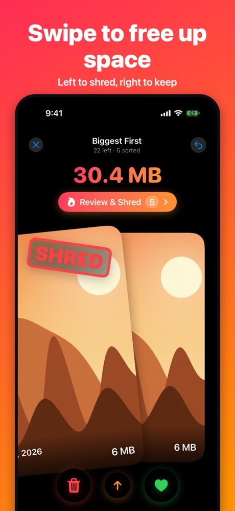
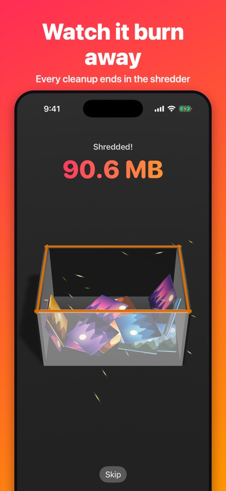
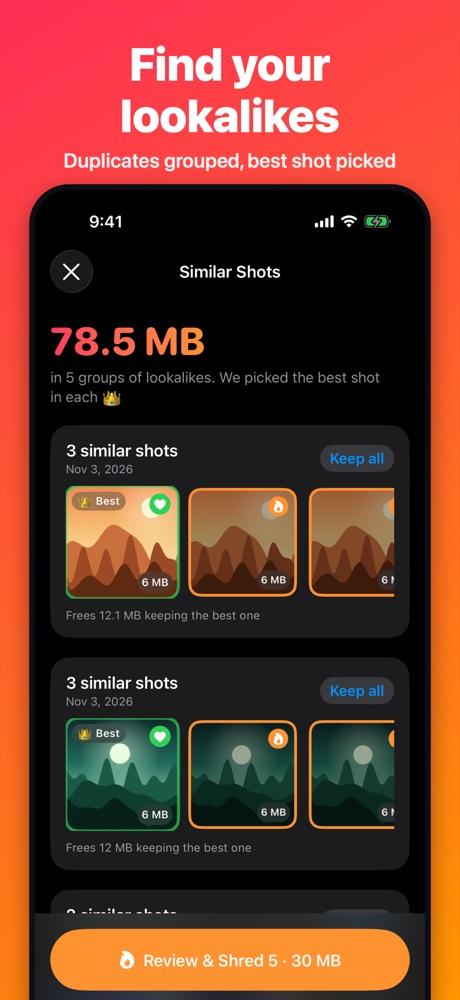

Cleaning up your photos can be fun
Probably Junk
Finds old receipts, boarding passes, QR codes, documents and blurry shots, and tells you why each one was picked.
Swipe to sort
Swipe left to shred a photo, right to keep it, or up to decide later. A big counter shows the space you'll get back.
More ways to start
Biggest First, your oldest shots, screenshots, videos, or photos from this date in past years.
Find your lookalikes
Similar Shots groups duplicates and near-duplicates and suggests the best one to keep.
Clean up your files
Pick a folder and see its biggest files and exact copies. Shredding them is part of PhotoShred Pro.
The shredder
Your deleted photos rain into a 3D bin and burn away in a shower of sparks.
You stay in control
Nothing is deleted until you review your pile and confirm. Deleted items go to Recently Deleted in the Photos app for 30 days, so you can still change your mind.
Your photos and files are looked at only on your device. They are never uploaded. See the Privacy Policy.
Questions?
Visit Support or email kittiphongxayasane@gmail.com.